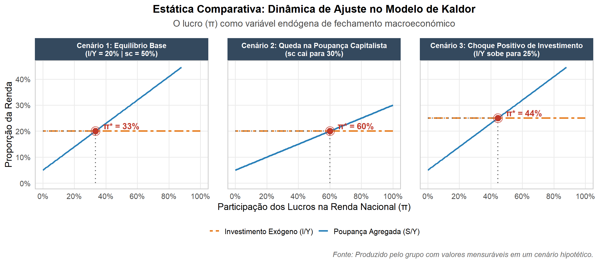

Modelo de Nicholas Kaldor
Nicholas Kaldor (1908–1986)
Fonte: Alchetron
Biografia
Nicholas Kaldor (1908–1986)
Nascido em Budapeste, na Hungria, destacou-se como um dos principais expoentes da Escola Pós-Keynesiana na Universidade de Cambridge, falecendo na Inglaterra em 1986. Ficou mundialmente conhecido por argumentar que o investimento determina a poupança e os lucros, além de formular as Leis do Crescimento Econômico, que destacam a indústria como o principal motor do desenvolvimento.
Introdução
A teoria da distribuição de renda pós-keynesiana nasce de um problema deixado por Harrod e Domar. O crescimento com pleno emprego só se sustenta se a poupança, a relação capital-produto e a taxa natural de crescimento forem compatíveis entre si. Como essas três variáveis são determinadas fora do sistema, nada garante que a condição se cumpra, e o equilíbrio de longo prazo dependeria de uma combinação improvável de fatores: é o chamado fio da navalha (LEMOS, 2019). Kaldor propôs uma saída ao tornar a poupança endógena, de modo que a distribuição de renda entre salários e lucros passa a ser a variável de ajuste do sistema (LEMOS, 2019; ESTULANO VIEIRA; OLIVEIRA; SUGAHARA, 2024). Esta seção apresenta a lógica desse modelo, que serve de base para o Teorema de Pasinetti e para as Leis de Kaldor, tratados nos pontos seguintes.
O modelo de Kaldor (1956)
Kaldor apresentou sua teoria em Alternative Theories of Distribution (1955-1956). Segundo Lemos (2019), o modelo pode ser lido como uma releitura keynesiana de um problema já colocado por Ricardo. No mundo ricardiano, só os capitalistas poupam e ficam com o ganho de produtividade, o que contrariaria a lei de Say, e a solução está na demanda efetiva: se o excedente é todo poupado, surgem excessos de poupança e a economia entra em recessão.
O modelo analisa uma economia fechada e sem governo, em trajetória de crescimento com pleno emprego da força de trabalho. O produto é limitado pela oferta de trabalho, e não pela demanda efetiva, e o investimento é dado exogenamente. Como o produto não pode variar, o equilíbrio entre poupança e investimento só se restabelece por mudanças na distribuição de renda (ESTULANO VIEIRA; OLIVEIRA; SUGAHARA, 2024).
A distribuição importa porque as classes não poupam na mesma proporção. Quem possui os meios de produção e vive de lucros tem propensão a poupar acima da média, e quem vive do trabalho poupa menos (BARANZINI, 1991, apud ESTULANO VIEIRA; OLIVEIRA; SUGAHARA, 2024). Logo, quanto maior a participação dos lucros na renda, maior a poupança agregada.
Partindo da renda como soma de lucros e salários, a poupança de cada classe e a condição de equilíbrio, Kaldor chega à propensão global a poupar da economia:
Renda, poupança e equilíbrio
\[Y = R + W\]
\[S = s_r R + s_w W\]
\[I = S\]
em que:
- \(Y\) = renda
- \(R\) = lucros totais
- \(W\) = salários totais
- \(S\) = poupança
- \(s_r\) = propensão a poupar dos capitalistas
- \(s_w\) = propensão a poupar dos trabalhadores
- \(I\) = investimento planejado
Substituindo \(W = Y - R\)
\[I = (s_r - s_w) R + s_w Y\]
Propensão global a poupar (dividindo por \(Y\))
\[\frac{I}{Y} = (s_r - s_w) \frac{R}{Y} + s_w\]
em que:
- \(I/Y = s\) = propensão média e marginal a poupar da economia
- \(R/Y\) = participação dos lucros na renda (as “margens de lucro” de Kaldor)
Participação dos lucros na renda (isolando \(R/Y\))
\[\frac{R}{Y} = \frac{1}{s_r - s_w} \frac{I}{Y} - \frac{s_w}{s_r - s_w}\]
Caso limite: os trabalhadores não poupam (\(s_w = 0\))
\[\frac{R}{Y} = \frac{1}{s_r} \frac{I}{Y}\]
Taxa garantida de crescimento segundo Kaldor
\[g_w' = \frac{s_r \, (R/Y)}{v}\]
em que:
- \(g_w'\) = taxa garantida de crescimento segundo Kaldor
- \(v\) = relação capital-produto
Equilíbrio de longo prazo
\[g_n = \frac{s_r \, (R/Y)}{v}\]
em que:
- \(g_n\) = taxa natural de crescimento (população e progresso técnico)
Assim, é a distribuição de renda que se ajusta para igualar poupança e investimento, e o equilíbrio com pleno emprego passa a ser alcançado por esse ajuste, e não por acaso (LEMOS, 2019).
Em A Model of Economic Growth (1957), Kaldor transpôs a teoria da distribuição para a análise do crescimento de longo prazo. Lemos (2019) destaca que esse modelo foge à tradição keynesiana em pontos como a flexibilidade dos preços, o pleno emprego e a ausência de uma teoria da taxa de juros.
Em Marginal Productivity and the Macro-Economic Theories of Distribution (1966), Kaldor respondeu a Samuelson e Modigliani na controvérsia do capital e incorporou as corporações, que financiam parte do investimento. Com isso, a taxa de lucro passa a ser \(r = \frac{g_n (1 - f)}{s_c}\), em que f é a fração do investimento financiada externamente e s_c é a taxa de retenção de lucros das corporações. Quando f = 0, volta-se à fórmula simples de Pasinetti, \(r = \frac{g_n}{s_c}\) (LEMOS, 2019).
Foi nesse debate que surgiram as críticas. Samuelson (1964, apud LEMOS, 2019) chamou Kaldor de “Jean Baptiste Kaldor”, o que remete a Say, pela ênfase no longo prazo e pelo papel que atribui à taxa de juros no ajuste ao pleno emprego. Davidson (1968, apud LEMOS, 2019) reforça a crítica ao notar que, nessa formulação, a taxa de juros garantiria que a demanda efetiva estivesse sempre no nível de pleno emprego. Esse debate leva ao passo seguinte da teoria, em que Pasinetti passa a dividir a economia em classes de pessoas.